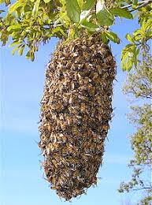
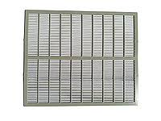
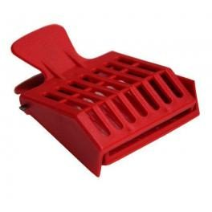

Секрети бджільництва.
Як підсадити матку в рій.

На зорі становлення своєї пасіки, як і багато початкуючих бджолярів, я розширював поголів'я бджіл невитіюватим
дідівським способом. Бджоли роїлися, а я ловив рої і заселяв їх в нові вулика в надії, що роевая сім'я більше не
роїтиметься як мінімум до наступного сезону. Але уся, як нині говорять, "пичалька" була в тому, що роїлися вони знову
і знову вже в липні, а іноді навіть і в серпні. Причому з кожним роком роевые симптоми посилювалися, бджіл ставало
багато, а меду не додавалося. Ось саме тоді я зрозумів, що доки не зміню породу бджіл на пасіці толку від такого
бджільництва не буде. Відтоді кожного разу, коли мені вдається упіймати рій, я тут же міняю в нім матку на породисту.
Якщо ви зняли з дерева рій і хочете замінити в нім матку, то зробити це можна двома способами. Починати, природно,
слід вечірньої пори доби, після того, як рій остигнув і заспокоївся де-небудь в тихому, прохолодному і темному місці,
наприклад, в лазні.
1. Просіюємо рій через грати Ганемана в порожній вулик і прибираємо з нього матку. Зазвичай я роблю це за допомогою
двох корпусів, між якими кладу пластмасові ганемановскую грати. Засипаю рій у верхній корпус і димом зганяю бджіл
через грати в нижній корпус вулика. В результаті такого просіювання матка з трутнями залишиться на поверхні грат,
а робоча бджола уся зійде вниз.

Решітка Гофмана для просіювання рою.
Для того, щоб бджоли більш охоче сходили вниз і для відвертання зльоту свіжопосадженого рою, бажано поставити в нижній
корпус одну-две рамки з друкарським розплодом(дивіться уважно, щоб на цих рамках не було відкритого розплоду або хоч би
одного яйця, інакше бджоли відтягнуть маточники і уб'ють вашу нову матку). Виявивши матку на повехности грати, я
видаляю її за допомогою кліпси для лову маток. Така кліпса зручна тим, що виключає ушкодження матки у момент її лову.
Кліпси ці коштують копійки і продаються у будь-якому магазині товарів для бджільництва.

Кліпса для лову маток.
Видаливши матку з вулика я залишаю бджіл на деякий час для того, щоб вони відчули сирітство без матки, а потім
підсаджую замкнуту в клітинці нову матку. Причому підсаджую її не на добу, а на 2-3 дні і лише потім трохи відкриваю
клітинку з боку годівниці з канди для поступового виходу матки. Цей метод поганий тим, що роевые бджоли іноді злітають
з нового вулика, іноді навіть залишаючи розплід, особливо якщо рій був з моєї пасіки. Для того, щоб рій не злетів,
необхідно дати можливість старій матці почати засів на новому місці.
2. Висипаємо рій в новий вулик на рамки з кормом і друкарським розплодом. Опісля день-два дивимося чи почала червить
матка. Якщо процес засіву пішов, знаходимо матку(зазвичай на рамках з яйцями) і помістивши її в клітинку з канди,
розміщуємо між рамками, а рамки з яйцями з вулика прибираємо(у інший вулик). У вулику залишається друкарський розплід,
бджоли, а також їх стара матка в клітинці. Залишаємо так усе це на добу, а через добу на місце клітинки із старою
маткою ставимо клітинку з новою, а стару видаляємо з вулика. Залишаємо так все дня на 3-4 і лише після цього трохи
відкриваємо клітинку з боку канди. При такому методі заміни роевой матки зльоту бджіл виявлено не було.